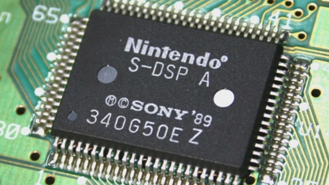
Bienvenido. Este glosario reúne definiciones clave relacionadas con la asignatura de Fundamentos de Ingeniería. Aquí encontrarás explicaciones claras y concisas de los conceptos esenciales para ayudarte a comprender y dominar el tema.
Sistema:
Sistema abierto:
Un sistema que intercambia materia, energía o información con su entorno. Por ejemplo, Un servidor web que recibe solicitudes de los clientes y responde con la información solicitada.
Sistema Cerrado:
Un sistema que no intercambia materia con su entorno, aunque puede intercambiar energía e información. En la práctica, los sistemas completamente cerrados son raros, pero un ejemplo aproximado podría ser un controlador de temperatura en una cámara frigorífica que solo responde a cambios internos y no a influencias externas.
Sistema Natural:
Un sistema que se forma de manera espontánea en la naturaleza sin intervención humana, como un ecosistema o un sistema climático.
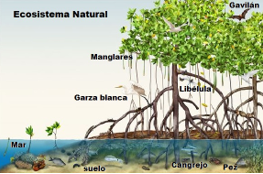Sistema Artificial:
Un sistema creado y diseñado por humanos, como una máquina, una computadora o una organización. Por ejemplo, Un sistema de inteligencia artificial programado para detectar rostros en una cámara de seguridad.
Sistema Determinístico:
Un sistema en el que el comportamiento futuro está completamente determinado por sus condiciones iniciales y las leyes que rigen el sistema. No hay incertidumbre en la predicción de su comportamiento. Por ejemplo, Un flujo de un algoritmo de ordenamiento como "Merge Sort" o "Quick Sort" con datos de entrada y salida.
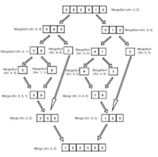Sistema Probabilístico:
Un sistema en el que el comportamiento futuro no se puede predecir con certeza debido a la presencia de variables aleatorias o incertidumbre. Por ejemplo, un gráfico de un modelo de machine learning que muestra probabilidades de diferentes resultados.
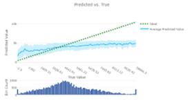Gestalt:
Un enfoque en psicología y filosofía que estudia cómo percibimos y organizamos los estímulos y las experiencias en patrones significativos y coherentes. El principio de Gestalt sugiere que el todo es diferente de la suma de sus partes. Por ejemplo, La interfaz de usuario de una aplicación que organiza elementos de manera intuitiva según los principios de proximidad y semejanza.
Equinifinidad:
La idea de que diferentes sistemas o configuraciones pueden llegar al mismo estado o resultado final. En otras palabras, diferentes caminos pueden llevar al mismo destino o efecto. Por ejemplo, Diferentes algoritmos de búsqueda (BFS, DFS) que pueden encontrar la misma solución óptima en un problema de búsqueda de rutas.
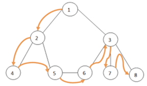Sinergia:
La interacción de elementos dentro de un sistema que produce un efecto combinado mayor que la suma de los efectos individuales de esos elementos. Es decir, el todo es más que la suma de sus partes. Por ejemplo, Un sistema multiprocesador en una computadora donde varios procesadores trabajan juntos para mejorar el rendimiento.
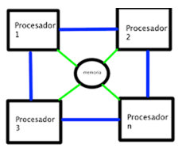Recursividad:
El proceso en el cual un sistema se auto-repite o se auto-referencia en su estructura o funcionamiento. Por ejemplo, el algoritmo de Fibonacci implementado de manera recursiva.
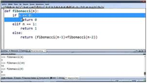Morfogénesis:
El proceso de formación y desarrollo de la estructura o forma de un sistema. En biología, se refiere a cómo se desarrollan las formas y estructuras de los organismos durante el crecimiento. Por ejemplo, algoritmos genéticos que evolucionan soluciones a problemas optimizando su estructura a través de generaciones.
Organicidad:
La cualidad de un sistema de tener una estructura organizada y coherente, similar a la de un organismo. Se refiere a la capacidad de un sistema para mantener su integridad y funcionalidad a pesar de los cambios. Por ejemplo, sistemas autoorganizados, como los sistemas multiagente que cooperan de manera autónoma.
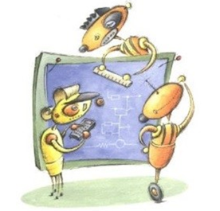Isomorfismo:
La existencia de una correspondencia o similitud estructural entre dos sistemas diferentes. Dos sistemas son isomorfos si tienen una estructura o función similar, aunque pueden ser distintos en otros aspectos. Por ejemplo, Un modelo de datos que se puede mapear directamente a una base de datos relacional.
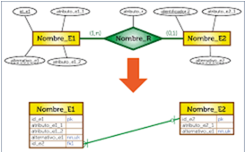Homeomorfismo:
Una forma de isomorfismo en la que hay una correspondencia uno a uno entre los elementos de dos sistemas, de manera que las propiedades y la estructura se mantienen bajo transformaciones continuas. Es un término más común en matemáticas, especialmente en topología. Por ejemplo, diferentes representaciones gráficas de un grafo que mantienen la conectividad entre nodos.
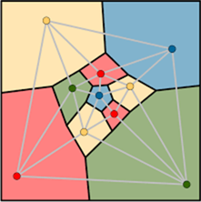Homeóstasis:
El proceso mediante el cual un sistema mantiene su equilibrio interno y estabilidad a pesar de los cambios en su entorno. En biología, se refiere a la capacidad de los organismos para mantener condiciones internas estables. Un sistema operativo que gestiona los recursos de una computadora para evitar sobrecargas.
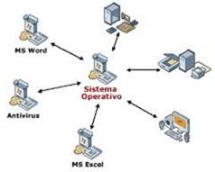